Portfólio do JPE
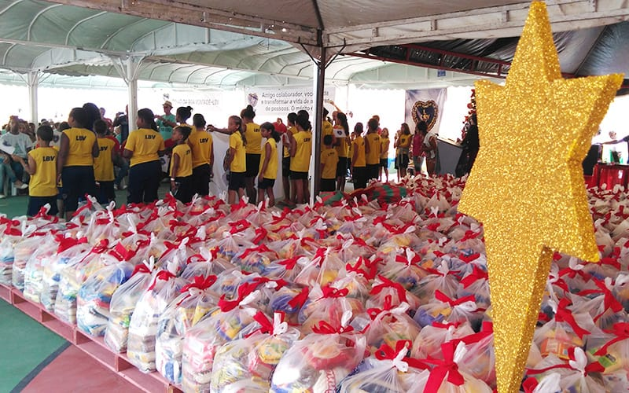
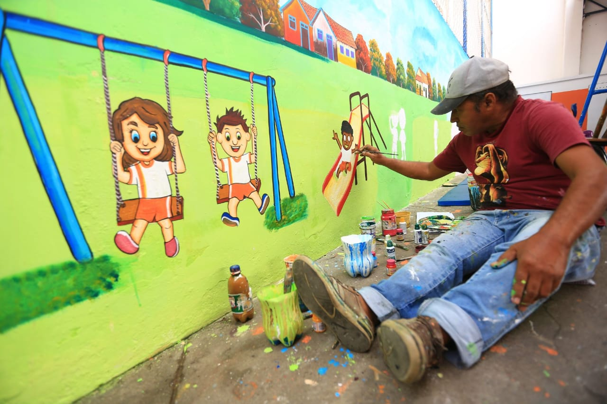
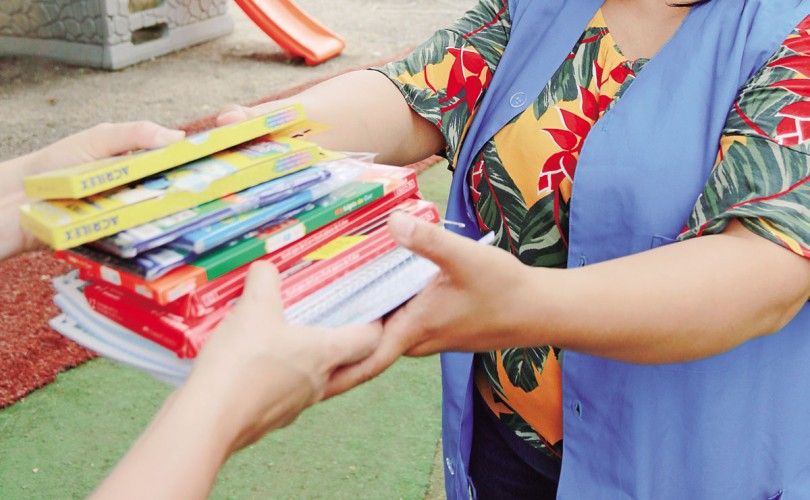
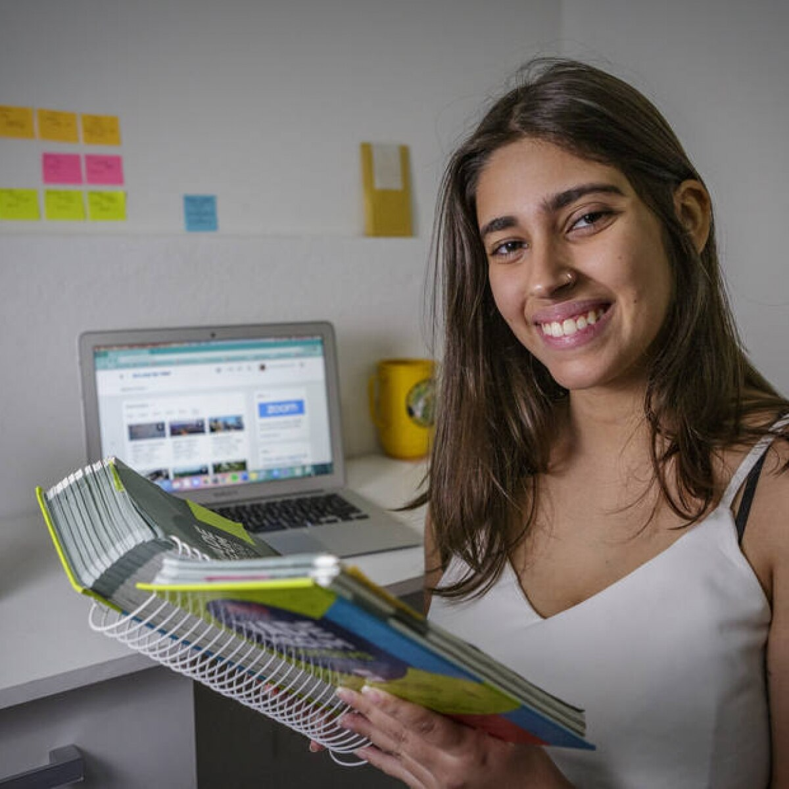
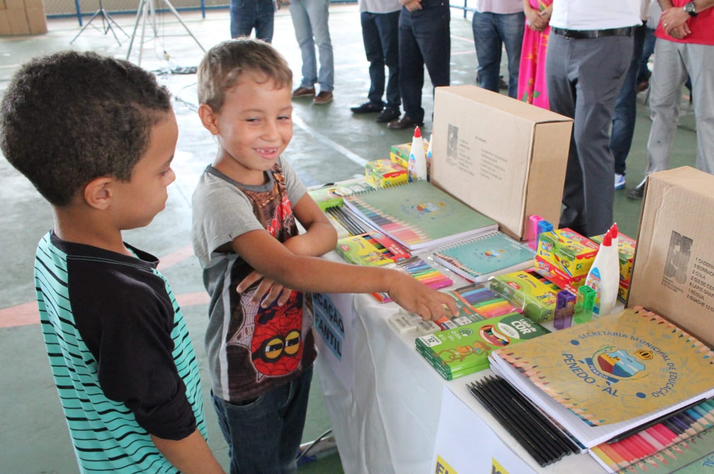
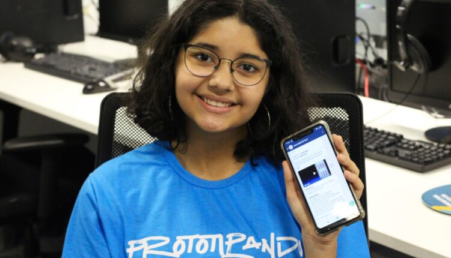

 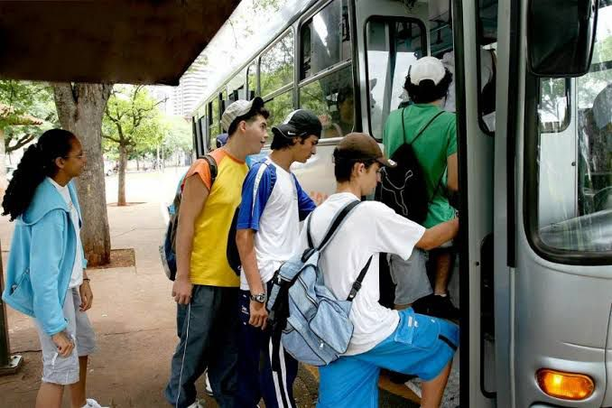
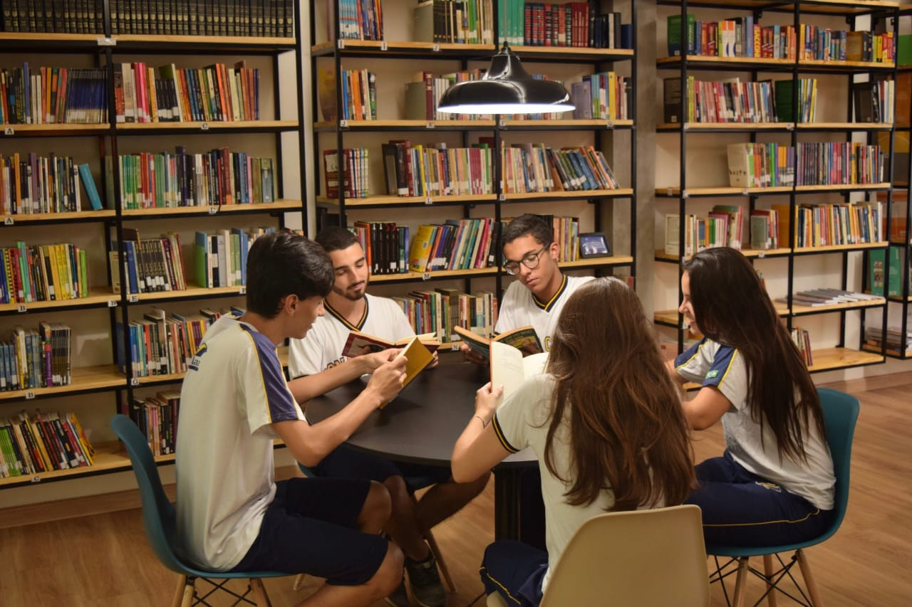
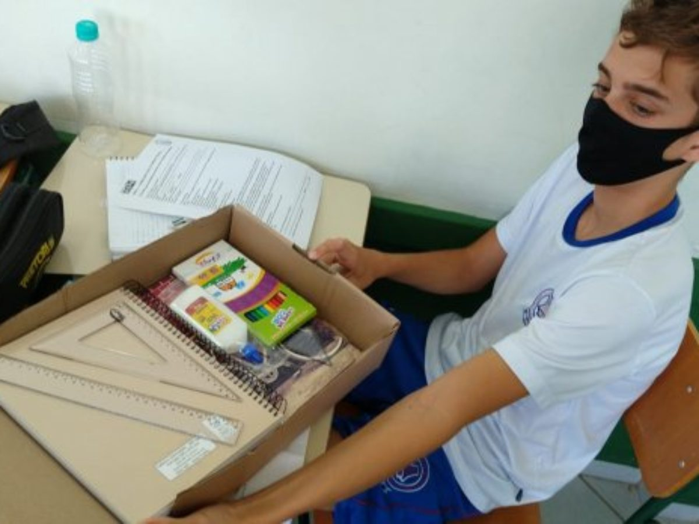
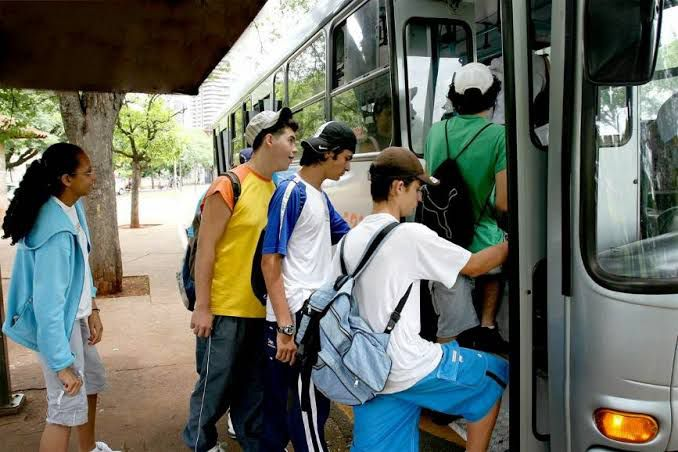
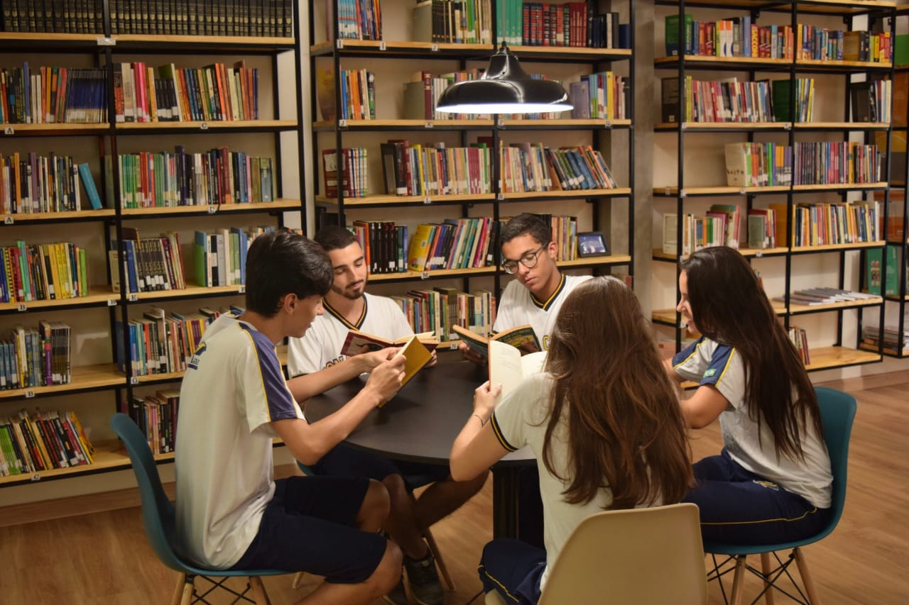
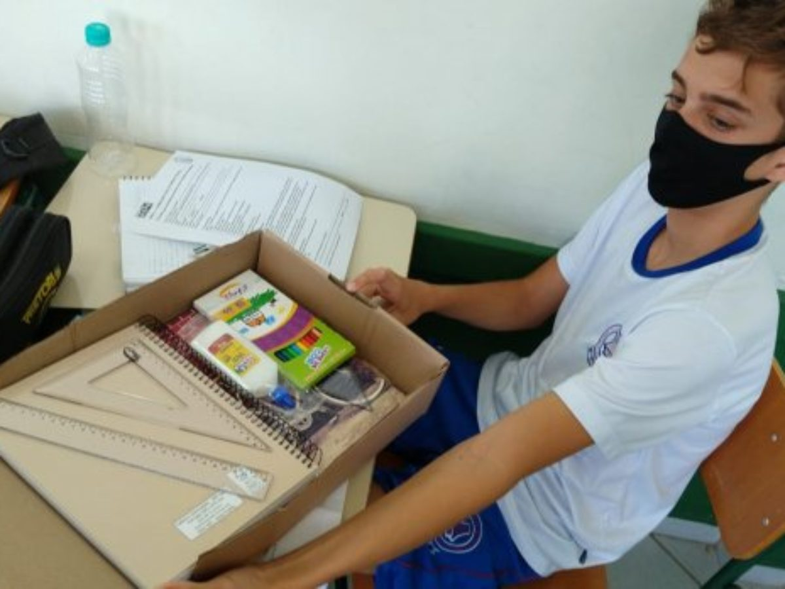
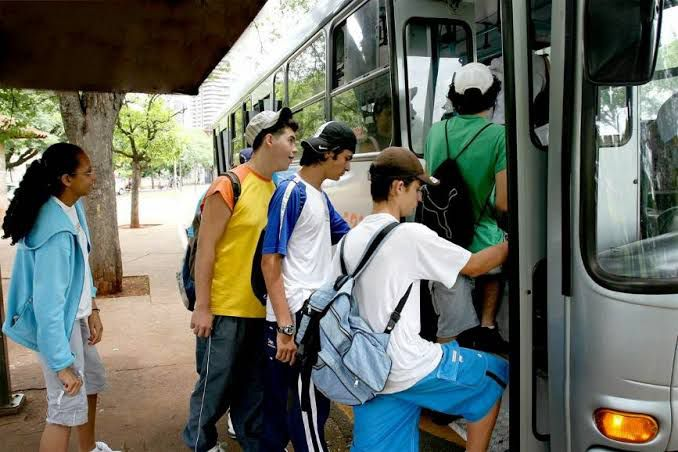
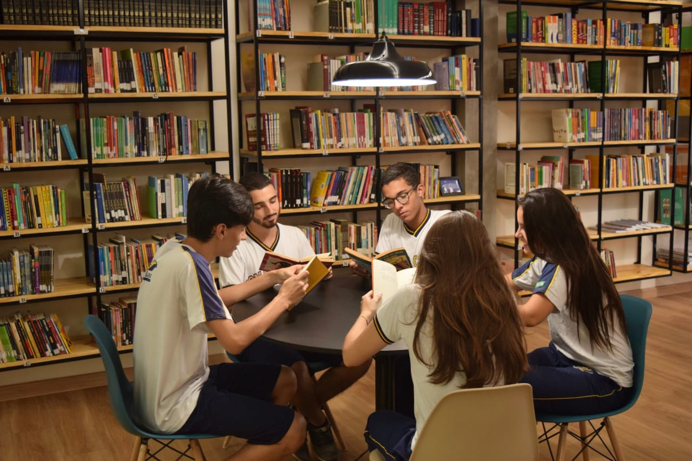
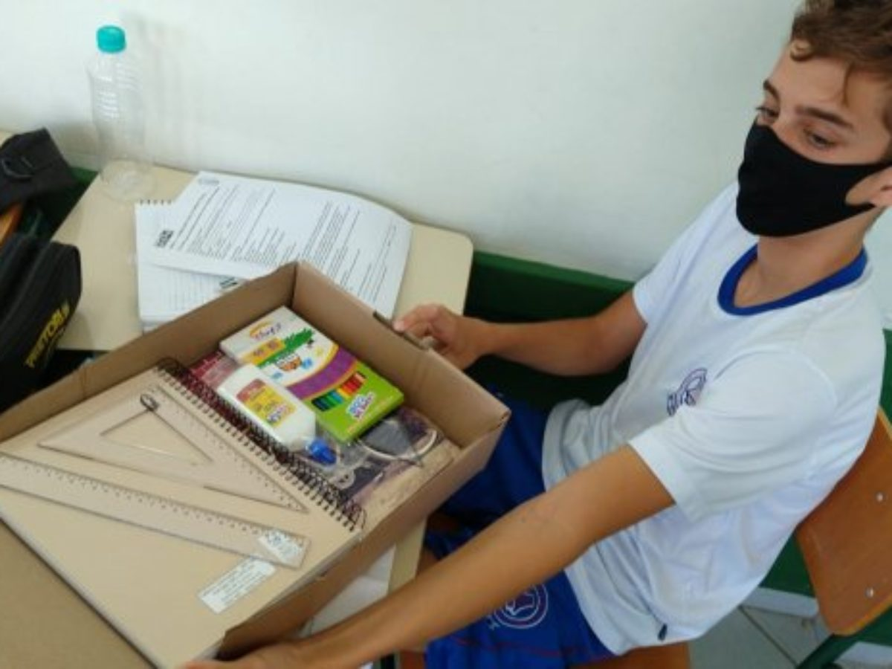
" O Instituto Juntos Pela Educação contribuiu muito com materiais escolares que ajudaram no meu desenvolvimento na escola, sou muito grata pelo apoio do Instituto JPE que me ajudou a ampliar meus resultados e a não desistir dos meus estudos." - Susan (Estudante), 2022
"JPE me fez acreditar que eu consigo ter um futuro melhor, com a ajuda deles eu voltei a estudar e acreditar em mim mesmo, tive apoio de com materiais, vale transporte e ótimas oportunidades." - Bryan (Estudante), 2022
"Nós todos e principalmente os nossos alunos agradecemos a ajuda do Instituto JPE que conseguiu doações para nossas crianças, ficamos muito felizes com a boa qualidade de estudo que agora podemos dar á eles. Recebemos doações de lápis, cadernos, canetas, borrachas sendo disponibilizadas para os alunos que mais necessitam, tudo graças aos colaboradores do Instituto Juntos Pela Educação." - CEI Estrelinha de Sol (Instituição), 2022
"Nossa Escola junto com os alunos estamos felizes com a ajuda dos colaboradores do JPE, com o apoio que recebemos conseguimos colocar Internet na escola, para que os alunos possam fazer trabalhos e pesquisas o que ampliou muito os conhecimentos e qualidade de ensino." - E.M Doutor Francisco (Instituição), 2022
"Agradecemos a ajuda que recebemos do JPE Nossos alunos ficaram muito felizes ao receber seus cadernos e apostilas de estudos para um melhor aprendizado. Os mais carentes receberam cestas basicas o que diminuiu a evasão escolar." - E.M.Professor Salvador Dalí (Instituição), 2022
" Estamos gratos pela ajuda que o Instituto JPE nos forneceu, com isso conseguimos comprar diversos livros para nossa biblioteca, incentivando à leitura, algo muito importante para o desenvolvimento e aprendizado. Nunca vi a nossa antiga biblioteca tão cheia quanto agora." - Escola de Ensino Médio Frida Kahlo (Instituição), 2022
"Quando estava prestes a desistir dos meus estudos para ajudar no sustento da casa e começar a trabalhar, o Instituto Juntos Pela Educação me deu novas oportunidades, recebi doações de cestas basicas, e materiais escolares algo que ajudou nas despesas de casa, além disso recebo vale transporte e assim consigo ir á escola todos os dias." - Josiel (Estudante), 2022
"O instituto Jpe forneceu diversos materiais e uniformes para mim e para minha irmãzinha, depois disso não precisamos mais ter vergonha de frequêntar a escola, agora temos as vestimentas adequadas e materiais de ótima qualidade." - Laura (Estudante), 2022
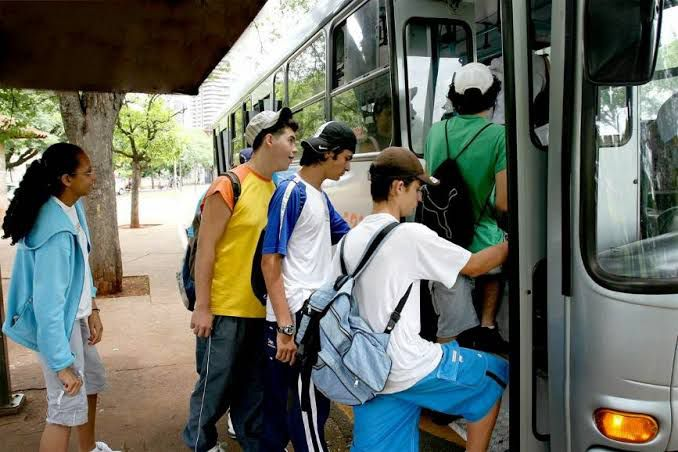
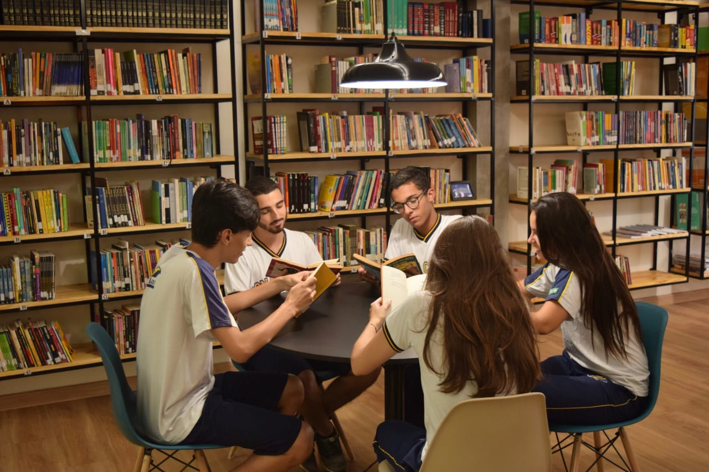
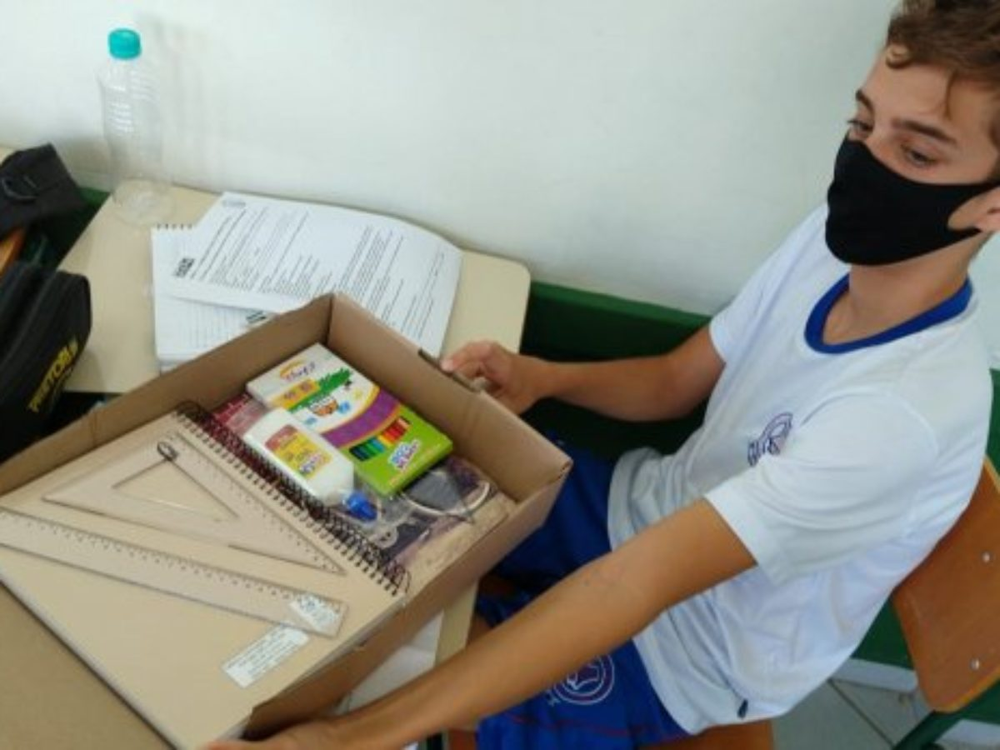